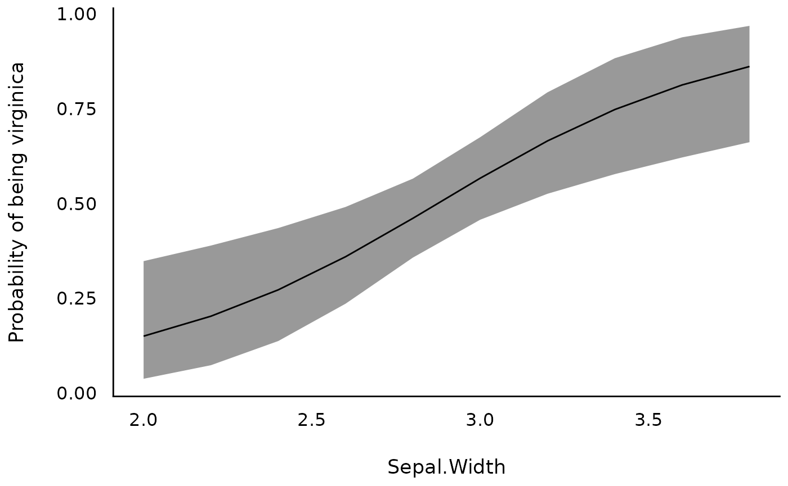

This vignette can be referred to by citing the package:
- Makowski, D., Ben-Shachar, M. S., & Lüdecke, D. (2019). bayestestR: Describing Effects and their Uncertainty, Existence and Significance within the Bayesian Framework. Journal of Open Source Software, 4(40), 1541. https://doi.org/10.21105/joss.01541
Now that describing and understanding posterior distributions of linear regressions is not that mysterious to you, we will take one step back and study some simpler models: correlations and t-tests.
But before we do that, let us take a moment to remind ourselves and appreciate the fact that all basic statistical procedures such as correlations, t-tests, ANOVAs, or chi-square tests are linear regressions (we strongly recommend this excellent demonstration). Nevertheless, these simple models will provide a good pretext to introduce a few more complex indices, such as the Bayes factor.
Correlations
Frequentist version
Once again, let us begin with a frequentist
correlation between two continuous variables, the
width and the length of the sepals of
some flowers. The data is available in R as the
iris dataset (the same that was used in the previous
tutorial).
We will compute a Pearson’s correlation test, store the results in an
object called result, and then display it:
result <- cor.test(iris$Sepal.Width, iris$Sepal.Length)
result>
> Pearson's product-moment correlation
>
> data: iris$Sepal.Width and iris$Sepal.Length
> t = -1, df = 148, p-value = 0.2
> alternative hypothesis: true correlation is not equal to 0
> 95 percent confidence interval:
> -0.273 0.044
> sample estimates:
> cor
> -0.12As you can see in the output, the test actually compared two hypotheses: - the null hypothesis (h0; no correlation), - the alternative hypothesis (h1; a non-null correlation).
Based on the p-value, the null hypothesis cannot be rejected: the correlation between the two variables is negative but non-significant (r = -.12, p > .05).
Bayesian correlation
To compute a Bayesian correlation test, we will need the BayesFactor
package (you can install it by running
install.packages("BayesFactor")). We can then load this
package, compute the correlation using the correlationBF()
function, and store the result.
library(BayesFactor)
result <- correlationBF(iris$Sepal.Width, iris$Sepal.Length)Now, let us run our describe_posterior() function on
that:
describe_posterior(result)> Summary of Posterior Distribution
>
> Parameter | Median | 95% CI | pd | ROPE | % in ROPE | BF | Prior
> -----------------------------------------------------------------------------------------------
> rho | -0.11 | [-0.27, 0.04] | 92.25% | [-0.05, 0.05] | 20.42% | 0.509 | Beta (3 +- 3)We see again many things here, but the important indices for now are
the median of the posterior distribution,
-.11. This is (again) quite close to the frequentist
correlation. We could, as previously, describe the credible
interval, the pd
or the ROPE
percentage, but we will focus here on another index
provided by the Bayesian framework, the Bayes Factor
(BF).
Bayes Factor (BF)
We said previously that a correlation test actually compares two hypotheses, a null (absence of effect) with an alternative one (presence of an effect). The Bayes factor (BF) allows the same comparison and determines under which of these two models the observed data are more probable: a model with the effect of interest, and a null model without the effect of interest. So, in the context of our correlation example, the null hypothesis would be no correlation between the two variables (h0: \rho = 0; where \rho stands for Bayesian correlation coefficient), while the alternative hypothesis would be that there is a correlation different than 0 - positive or negative (h1: \rho \neq 0).
We can use bayesfactor_models() to specifically compute
the Bayes factor comparing those models:
bayesfactor_models(result)> Bayes Factors for Model Comparison
>
> Model BF
> [2] (rho != 0) 0.509
>
> * Against Denominator: [1] (rho = 0)
> * Bayes Factor Type: JZS (BayesFactor)We got a BF of 0.51. What does it mean?
Bayes factors are continuous measures of relative evidence, with a Bayes factor greater than 1 giving evidence in favour of one of the models (often referred to as the numerator), and a Bayes factor smaller than 1 giving evidence in favour of the other model (the denominator).
Yes, you heard that right, evidence in favour of the null!
That’s one of the reason why the Bayesian framework is sometimes considered as superior to the frequentist framework. Remember from your stats lessons, that the p-value can only be used to reject h0, but not accept it. With the Bayes factor, you can measure evidence against - and in favour of - the null. In other words, in the frequentist framework, if the p-value is not significant, we can conclude that evidence for the effect is absent, but not that there is evidence for the absence of the effect. In Bayesian framework, we can do the latter. This is important since sometimes our hypotheses are about no effect.
BFs representing evidence for the alternative against the null can be reversed using BF_{01}=1/BF_{10} (the 01 and 10 correspond to h0 against h1 and h1 against h0, respectively) to provide evidence of the null against the alternative. This improves human readability1 in cases where the BF of the alternative against the null is smaller than 1 (i.e., in support of the null).
In our case, BF = 1/0.51 = 2, indicates that the data
are 2 times more probable under the null compared to the
alternative hypothesis, which, though favouring the null, is
considered only anecdotal
evidence against the null.
We can thus conclude that there is anecdotal evidence in favour of an absence of correlation between the two variables (rmedian = 0.11, BF = 0.51), which is a much more informative statement that what we can do with frequentist statistics.
And that’s not all!
Visualise the Bayes factor
In general, pie charts are an absolute no-go in data visualisation, as our brain’s perceptive system heavily distorts the information presented in such way2. Nevertheless, there is one exception: pizza charts.
It is an intuitive way of interpreting the strength of evidence provided by BFs as an amount of surprise.

Wagenmakers’ pizza poking analogy. From the great <www.bayesianspectacles.org> blog.
Such “pizza plots” can be directly created through the see
visualisation companion package for easystats (you can
install it by running install.packages("see")):
library(see)
plot(bayesfactor_models(result)) +
scale_fill_pizza()So, after seeing this pizza, how much would you be surprised by the outcome of a blinded poke?
t-tests
“I know that I know nothing, and especially not if versicolor and virginica differ in terms of their Sepal.Width” - Socrates.
Time to finally answer this crucial question!
Versicolor vs. virginica
Bayesian t-tests can be performed in a very similar way to
correlations. As we are particularly interested in two levels of the
Species factor, versicolor and virginica.
We will start by filtering out from iris the non-relevant
observations corresponding to the setosa specie, and we will
then visualise the observations and the distribution of the
Sepal.Width variable.
library(datawizard)
library(ggplot2)
# Select only two relevant species
data <- droplevels(data_filter(iris, Species != "setosa"))
# Visualise distributions and observations
ggplot(data, aes(x = Species, y = Sepal.Width, fill = Species)) +
geom_violindot(fill_dots = "black", size_dots = 1) +
scale_fill_material() +
theme_modern()
It seems (visually) that virgnica flowers have, on
average, a slightly higer width of sepals. Let’s assess this difference
statistically by using the ttestBF() function in the
BayesFactor package.
Compute the Bayesian t-test
result <- BayesFactor::ttestBF(formula = Sepal.Width ~ Species, data = data)
describe_posterior(result)> Summary of Posterior Distribution
>
> Parameter | Median | 95% CI | pd | ROPE | % in ROPE
> -------------------------------------------------------------------------
> Difference | -0.19 | [-0.32, -0.06] | 99.75% | [-0.03, 0.03] | 0%
>
> Parameter | BF | Prior
> ---------------------------------------
> Difference | 17.72 | Cauchy (0 +- 0.71)From the indices, we can say that the difference of
Sepal.Width between virginica and
versicolor has a probability of 100% of being
negative [from the pd and the sign of the median]
(median = -0.19, 89% CI [-0.29, -0.092]). The data provides a
strong evidence against the null hypothesis (BF =
18).
Keep that in mind as we will see another way of investigating this question.
Logistic Model
A hypothesis for which one uses a t-test can also be tested using a binomial model (e.g., a logistic model). Indeed, it is possible to reformulate the following hypothesis, “there is an important difference in this variable between the two groups” with the hypothesis “this variable is able to discriminate between (or classify) the two groups”. However, these models are much more powerful than a t-test.
In the case of the difference of Sepal.Width between
virginica and versicolor, the question becomes,
how well can we classify the two species using only
Sepal.Width.
Visualise the model
Using the modelbased
package.
library(modelbased)
vizdata <- estimate_relation(model)
ggplot(vizdata, aes(x = Sepal.Width, y = Predicted)) +
geom_ribbon(aes(ymin = CI_low, ymax = CI_high), alpha = 0.5) +
geom_line() +
ylab("Probability of being virginica") +
theme_modern()
Performance and Parameters
Once again, we can extract all indices of interest for the posterior
distribution using our old pal describe_posterior().
describe_posterior(model, test = c("pd", "ROPE", "BF"))> Summary of Posterior Distribution
>
> Parameter | Median | 95% CI | pd | ROPE | % in ROPE
> ---------------------------------------------------------------------------
> (Intercept) | -6.12 | [-10.45, -2.25] | 99.92% | [-0.18, 0.18] | 0%
> Sepal.Width | 2.13 | [ 0.79, 3.63] | 99.94% | [-0.18, 0.18] | 0%
>
> Parameter | BF | Rhat | ESS
> --------------------------------------
> (Intercept) | 12.91 | 1.000 | 26540.00
> Sepal.Width | 14.63 | 1.000 | 26693.00
library(performance)
model_performance(model)> # Indices of model performance
>
> ELPD | ELPD_SE | LOOIC | LOOIC_SE | WAIC | R2 | RMSE | Sigma
> ------------------------------------------------------------------------
> -66.284 | 3.052 | 132.568 | 6.104 | 132.562 | 0.099 | 0.477 | 1.000
>
> ELPD | Log_loss | Score_log | Score_spherical
> ------------------------------------------------
> -66.284 | 0.643 | -35.436 | 0.014